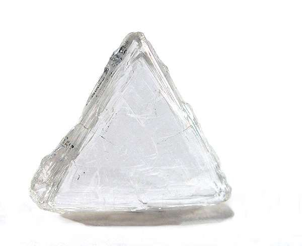

Penny gets the nod: De Beers' old boss becomes its likeliest buyer
Anglo American names the Global Diamond Consortium, led by former De Beers chief executive Gareth Penny, preferred bidder for its 85% stake — carried at $4.9 billion after $3.5 billion of write-downs. Botswana, with 15% and matching rights, weighs its move.

§1The old boss wants the keys back.
The announcement came from Gaborone, not London. On July 17, Moeti Mohwasa, Botswana's minister for state president, defence and security, told parliament that Anglo American had run a competitive process with three shortlisted bidders and identified a preferred buyer for its 85% of De Beers: the Global Diamond Consortium, led by Gareth Penny, the former De Beers chief executive. Twenty-six months after Anglo put the diamond house on the block, the sale finally has a front-runner, and he is a man who once ran the asset he now wants to own.
Little about the consortium has been disclosed, including its members and its money. What Mohwasa did tell parliament is that the group plans to bring in Angola and Namibia as partners, a structure Botswana's government publicly welcomed. That detail matters because of what happened last week: Angola's state miner Endiama confirmed its own bid for the full 85%, and ex-De Beers executives were reported to be circling too.
April's field of names included Bruce Cleaver, another former De Beers chief, the Australian mining veteran Michael O'Keeffe, Indian billionaire Anil Agarwal, and the Indian manufacturers KGK Group and Kapu Gems. Whether Endiama's ambitions now fold into Penny's producer-state coalition is the sale's open question.
§2Gaborone holds the clock.
Botswana holds the other key. The government owns 15% of De Beers and retains full pre-emption rights, meaning it can match the winning offer alone or with a partner of its choosing. Mohwasa said the state is consulting financial advisers on the optimal structure, and any completion requires its approval. President Duma Boko has framed the stake as a matter of economic sovereignty; diamonds remain the spine of the country's export economy, and the question of who controls the company that sorts and sells them is as political as it is commercial.
De Beers has been for sale longer than some of its sightholders have been profitable; the trade will take a named buyer over a perfect one.
The financial frame is sobering. Anglo carries De Beers at $4.9 billion after $3.5 billion of impairments, a valuation written down through the worst rough-diamond market in a generation. The sale process began in May 2024 as part of the restructuring Anglo promised investors while fending off BHP's takeover approach. Money, not vision, is the known hazard for any bidder: "he is finding it difficult to raise funds," James Campbell, a veteran Botswana diamond executive, said of Penny's effort, noting the Cleaver bid met the same wall.
§3Money is the only unanswered question.
The timetable, at least, is now public. Botswana officials expect the transaction to be finalized by the fourth quarter of 2026, subject to government approvals on both sides of the table. Between now and then sit the consortium's funding round, the pre-emption decision in Gaborone, and the small matter of running a diamond company through a fragile recovery while its ownership is decided. De Beers has been for sale longer than some of its sightholders have been profitable; the trade will take a named buyer over a perfect one.
A preferred bidder is not a buyer. Penny's edge was never capital — it was the map in his head and the credibility to convene producer governments around it. If the funding closes and Angola and Namibia take seats beside Botswana, the world's most famous diamond company ends up owned by the people who mine its diamonds, which is either the industry's most stable configuration or its most political, depending on the year.
Watch the pre-emption clock in Gaborone; it, not London, decides how this ends.
The trade, filed to your inbox before the New York open.
Prices, tenders and the one story that moved the industry overnight — read in ninety seconds.
Subscribe free →